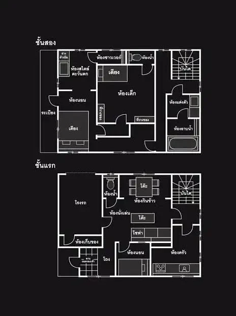

บ้านหลังนี้มีบางอย่าง…ผิดปกติ

บ้านวิกลคนประหลาด
ABOUT BOOK
ผู้แต่ง : อุเก็ตสึ
แนว : ลึกลับ สืบสวนสอบสวน
เรื่องย่อ :
นิยายแนวสืบสวนลึกลับจากญี่ปุ่น เมื่อนักเขียนอิสระ ผู้เชี่ยวชาญเรื่องลึกลับได้มีโอกาสฟังเรื่องราว ประสบการณ์พิศวงอยู่บ่อยๆ โดยเฉพาะเรื่องราวที่เกี่ยวข้องกับ "บ้าน" สิ่งปลูกสร้างที่มาพร้อมเรื่องเล่าลึกลับ มีอยู่มากมายนับไม่ถ้วน แต่เรื่องราวของ "บ้าน" หลังที่เพิ่งได้ฟังและเข้าไปมีส่วนเกี่ยวข้อง กลับไม่เหมือนเรื่องใดที่เคยได้ยินมา
WHY READ ?
1. อ่านเหมือนกำลังไขคดี
ผู้อ่านสามารถตั้งข้อสันนิษฐาน หาความจริง อ่านแบบสังเกต วิเคราะห์ตาม หาความผิดปกติ และเชื่อมโยงรายละเอียดต่าง ๆ ไปพร้อมกับตัวละคร
2. แปลนบ้านคือกุญแจ
แปลนบ้านเป็นส่วนสำคัญของปริศนา ช่วยดำเนินเรื่อง ยิ่งมองก็ยิ่งพบสิ่งที่ชวนสงสัย และช่วยให้ผู้อ่าน มองเห็นความผิดปกติและตามหาเบาะแสที่ซ่อนอยู่
3. เพราะทุกพื้นที่อาจมีความลับ
พื้นที่แต่ละส่วนในบ้าน ห้อง ทางเดิน ประตู และพื้นที่ต่าง ๆ อาจมีความหมายมากกว่าที่เห็น ชวนให้ตั้งคำถามและสังเกตว่าทำไมจึงถูกออกแบบ ในลักษณะนั้น ทำให้ต้องอ่านอย่างละเอียด และเกี่ยวข้องกับเหตุการณ์ในเรื่องอย่างไร
VALUE
ฝึกการคิดวิเคราะห์และการสังเกต
ช่วยให้ผู้อ่านใส่ใจกับรายละเอียดเล็ก ๆ วิเคราะห์ความผิดปกติและค้นหาเบาะแส ที่ซ่อนอยู่ในเรื่อง
ฝึกการเชื่อมโยงข้อมูลและการตั้งสมมติฐาน
ผู้อ่านต้องนำข้อมูลจากหลายส่วนมาเชื่อมโยงกัน ตั้งข้อสันนิษฐาน และใช้เหตุผลเพื่อค้นหาคำตอบ ของปริศนา
ทำให้การอ่านมีส่วนร่วมและสนุกมากขึ้น
ผู้อ่านสามารถร่วมสืบสวน คาดเดา และไขปริศนาไปพร้อมกับตัวละคร ทำให้รู้สึกเหมือนเป็นส่วนหนึ่งของคดี